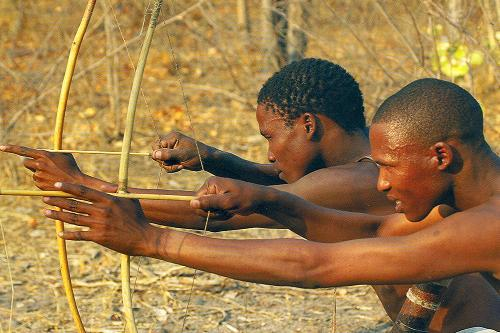

Evolutionary Biology of Education
April 26th, 2023
Hello Friends! I found an amazing article on the practical application of hunter-gatherer educational methods. It is “The Evolutionary Biology of Education: How Our Hunter-Gatherer Educative Instincts Could Form the Basis for Education Today” by Peter Gray. Before I begin my discussion, below is a great video on the Hazda tribe of the Tanzanian rainforests which is one of the many studied by Gray.
Gray begins with defining the terms “education” and “schooling” which will lay the foundation for understanding the difference between hunter-gatherer and modern pedagogies. He writes that, “Schooling is a relatively new cultural innovation. It is the deliberate provision, by adults, of special settings and procedures designed to teach specific skills, beliefs, and concepts to the young. Education, in contrast, is far from new; it is older than our species. As applied to our species, it is the entire set of processes by which each new generation of human beings, in any cultural group, acquires the skills, knowledge, rituals, beliefs, lore, and values—in short, the culture—of the previous generation” (Gray, 28). This delineation is crucial because our “educational instincts” are millions of years old and, thus, have a greater influence on the psychology of students than socially engineered schooling practices. Gray states that, “In any human group, children who failed to acquire crucial aspects of the culture around them would be at a serious disadvantage for survival and reproduction. They would not know how to perform economically essential tasks, how to get along well with others within their culture, or how to attract a mate for reproduction. Natural selection, then, would strongly favor characteristics that promoted young people’s abilities to acquire the culture” (Gray, 28-29). This sets the stage for how modern educational systems can use evolutionary psychology to better educate children and youth.
Next, the methodology used by Gray in his study is intriguing. He states that, “To supplement that literature, I (along with graduate student Jonathan Ogas) identified ten prominent anthropologists who, among them, had studied seven different hunter-gatherer cultures on three different continents and questioned them extensively, with a written questionnaire, about their observations of children’s lives in the cultures they observed” (Gray, 29). The hunter-gatherer communities studied fall into the “immediate-return” or “egalitarian” category. These people groups live in bands ranging from 20 to 50 people and are fiercely egalitarian. The cultures studied include “the Ju/ ’hoansi (also called the !Kung, of Africa’s Kalahari Desert), Hazda (of Tanzanian rainforests), Mbuti (of Congo’s Ituri Forest), Aka (of rain forests in Central African Republic and Congo), Efé (of Congo’s Ituri Forest), Batek (of Peninsular Malaysia), Agta (of Luzon, Philippines), Nayaka (of South India), Aché (of Eastern Paraguay), Parakana (of Brazil’s Amazon basin), and Yiwara (of the Australian Desert)” (Gray, 29). The reason for selecting egalitarian hunter-gatherer cultures is that they most likely represent how human societies were structured before the advent of agriculture 10,000 years ago. Therefore, they can give us the greatest insight into evolutionary psychology.
Furthermore, the research identified four key points regarding hunter-gatherer cultures. First, “Hunter-gathererer children had to learn an enormous amount to become effective adults” (Gray, 30). I remember reading a quote from Ted Kaczynski where he mentioned how the skills and knowledge required to survive with primitive technology equals that of a modern engineer’s repertoire in terms of volume. These skills include hunting, crafting of tools, shelter construction, foraging, navigation, and much more. Second, “Hunter-gatherer adults did not direct children’s education or in other ways tell them what to do. Children and even adolescents were free to play and explore, on their own, in their own chosen ways, ‘from dawn to dusk.’” (Gray, 30). The equality and autonomy which these children possess allow them to develop into intelligent and cooperative members of the band. Third, “Hunter-gatherer children acquired the skills of their culture, and consolidated their knowledge, by playing at culturally valued activities” (Gray, 32). These activities include fishing, cooking food, using tools such as knives, defending the tribe against imaginary predators, etc. Fourth, “Hunter-gatherer children and adolescents played and explored together in age-mixed groups” (Gray, 32). These groups of children typically ranged from 4 to 15 years old and this age-mix provided plenty of play-mates.

Word Count: 700